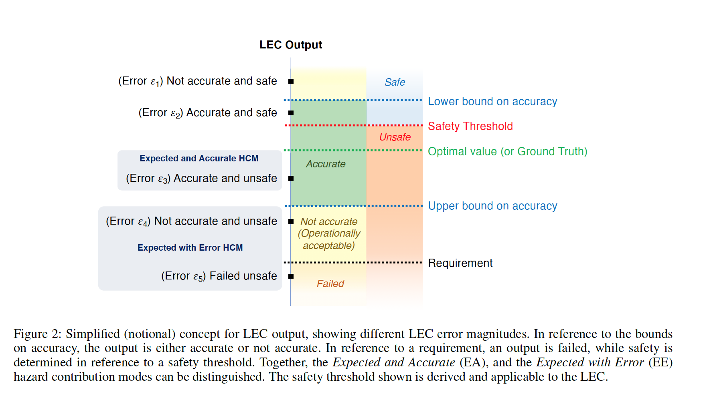

Hazard Contribution Modes of Machine Learning Components¶
Authors: Colin Smith, Ewen Denney, and Ganesh Pai
Summary¶
One-line summary¶
This paper provides a categorization framework for assessing the safety posture of a system that consists of embedded machine learning components. It additionally ties that in with a safety assurance reasoning scheme that helps to provide justifiable and demonstrable mechanisms for proving the safety of the system.
Definitions¶
Safety assurance arguments : Structured reasoning that links the safety claims made about a system with verifiable and auditable pieces of evidence. Specifically, it provides defensible and comprehensive justification for the safety of a system in a given environment.
Failure modes and effects analysis (FMEA) : A bottom-up hazard analysis approach for a system with a focus on the level of components of the system.
Learning-enabled components (LEC) : Software systems that consist of knowledge acquisition and machine learning components to provide a function or a service.
Hazard Contribution Mode (HCM) : A categorization of the ways in which LEC outputs can lead to hazardous system states. It does so by linking the potentially unobservable outputs of the LEC with the observable outputs of the wider system.
LEC accuracy : The property of the LEC such that its outputs are globally optimal which could mean accurate classification, near-perfect regression, or selection of reward-maximization actions in reinforcement learning.
LEC error : The divergence between the LEC outputs and the reference values.
Why is this a problem in LECs?¶
The problems where machine learning is utilized is often hard to specify, if it was easy to specify, it might not have warranted the use of machine learning.
ML algorithms are often unintelligible to humans which makes their oversight hard.
How are HCMs different from failure modes?¶
They are broader than just failure modes in the sense that they also encapsulate the cases where there isn’t a failure but it can still lead to a hazardous state.
Figure 2 provided in the paper is a really good reference for someone who wants to get a quick understanding of the spectrum of HCMs

One of the things that is important regarding this figure is that we assume that we have the ability to define the safety thresholds and states for the system as a whole.
Keeping this in mind, violating the safety thresholds can thus lead to the transition of the system from a safe to a hazardous state.
How does LEC error arise?¶
Supervised learning¶
Error can emerge from a combination of bias from the model assumptions and from variance from the type and quantity of data used and noise.
Unsupervised learning¶
There are several sources for errors in this context: inadequately specified optimization objective leading to approximation errors, an identifiability error from the model parameter choices that complicate the differentiation of different inputs, inadequate data a.k.a. estimation error, and algorithmic insufficiencies a.k.a. optimization errors.
What is expected performance?¶
One of the important notions that is utilized in this paper is expected performance: this is basically the idea that an LEC performs as expected, be that giving an accurate output or an erroneous one. What it essentially means is that you will see outputs from the system, whether accurate or erroneous, as was exhibited during the training, validation, and calibration phases of the LEC.
Expected and Accurate (EA) HCM¶
The system gives outputs that are accurate (as per the specification of the system) yet they induce hazardous system states.
An example : Say you have an autonomous vehicle (AV) that relies on lane markings to localize itself, in this case, if some of those lane markings are removed for some reason, the sensors might latch on to other lane markings and thus correctly align themselves with that and maintain appropriate distance except that they are not in the right lane and can lead to an accident.
When can this arise? : This can happen in the case of sensor malfunctions or different-from-normal environmental conditions within which the system is operating. This might happen because of inadequate representation in the data that is used to train the system or in the optimization algorithm that is used.
Expected with Error (EE) HCM¶
The system gives outputs that are erroneous with such a large magnitude of error that they violate the safety thresholds of the system.
An example : Building on the previous example, if the lane-keeping function has some deviation in the outputs whereby the errors are so large that, for example in estimating the distance to keep in the lane, instead of keeping the lane, it leads to lane departure and hence a hazardous state.
*A special note here that adversarial perturbations *
When can this arise? : In the cases where there is inadequate representation in the training data, assumptions made in the building on the ML model, especially as it relates to the relationship required between the inputs, outputs, and the safety thresholds, and an inadequate coverage of the environmental conditions within which the system will be deployed.
What is unexpected performance?¶
This refers to any behaviour from the system that is not observed during the validation of the LEC and is not expected to be seen in the normal operating conditions of the system. A thing to note here is that the definition of normal is something that probably emerges from the system specifications during the design phase but it requires more refinement if we’re to correctly utilize this taxonomy. This can happen because of unexpected feature interactions, and other emergent behaviour from the system that can cause problems when deployed in an environment where the conditions are different from the ones that the system was expected to run on.
How do we avoid this unexpected performance?¶
Compared to the case of expected performance, this requires runtime detection, recovery, and architecture-level safeguards to prevent hazardous states from emerging.
Unexpected and accurate (UA) HCM¶
This occurs when you
Conclusion¶
What does this mean for Actionable AI Ethics?¶
This is a great way to build more robustness into machine learning systems, especially from the perspective of having demonstrable and verifiable claims about the system.
Given that the techniques mentioned here are system-agnostic, both from the perspective of the type of system within which the machine learning components are embedded and the type of machine learning itself, it serves as a great framework to complement other safety protocols within the organization.
The assurance argumentation graphs also help to unearth potential blindspots when trying to ensure the safety of such systems and are a great supplement to reports that might need to be filed for auditing or regulatory purposes.
Questions that I am exploring¶
If you have answers to any of these questions, please tweet and let me know!
Potential further reading¶
A list of papers that I think might be interesting related to this paper.
Survey of Attacks and Defenses on Edge-Deployed Neural Networks
Disruptive Innovations and Disruptive Assurance: Assuring Machine Learning and Autonomy
Please note that this is a wish list of sorts and I haven’t read through the papers listed here unless specified otherwise (if I have read them, there will be a link from the entry to the page for that.)
Twitter discussion¶
I’ll write back here with interesting points that surface from the Twitter discussion.
If you have comments and would like to discuss more, please leave a tweet here.
Sign up for the newsletter¶
To stay up-to-date with the latest content in terms of what I am reading and thinking about, please subscribe to the Actionable AI Ethics newsletter